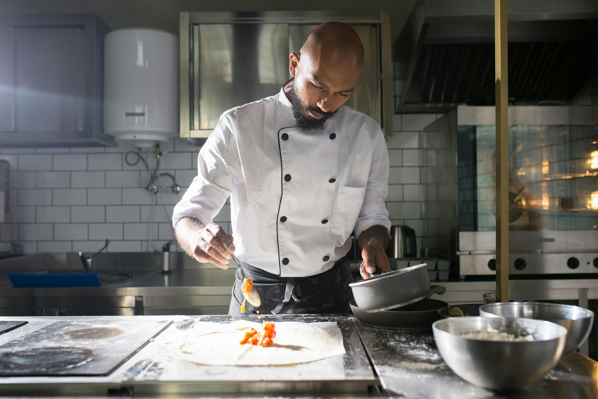

About Ceylon Cravings
Welcome to Ceylon Cravings, your gateway to the vibrant and rich culinary heritage of Sri Lanka. Our restaurant is built on the foundation of love for authentic Sri Lankan cuisine, crafted with care, tradition, and a modern touch.
Our Mission
To create a memorable dining experience by offering authentic Sri Lankan cuisine prepared with the finest ingredients, while providing warm and welcoming hospitality.
Our Vision
To become the global ambassador of Sri Lankan cuisine, showcasing its vibrant flavors and culinary traditions to food lovers worldwide.
History of Ceylon Cravings
Established in 2015, Ceylon Cravings began as a humble family-owned eatery in Colombo, Sri Lanka. What started as a small restaurant has now grown into a trusted brand for authentic Sri Lankan flavors. Over the years, we have expanded to multiple locations, each offering the same homely, flavorful dining experience.
Our Locations
- Colombo: 123 Main Street, Colombo 07
- Kandy: 45 Hilltop Avenue, Kandy
- Galle: 78 Lighthouse Road, Galle
Services We Provide
- Dine-In: Enjoy the ambiance and our warm hospitality at any of our locations.
- Takeaway: Grab your favorite Sri Lankan dishes to enjoy at home.
- Home Delivery: Get your food delivered fresh and fast, right to your doorstep.